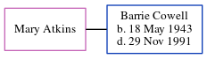

Sarah Elizabeth Page 1853 - 1927
[ Home ] | [ Calendar ] | [ Surnames Index ] | [ Errors ] | [ Family History ]A nor occupied for a living and the child of Stephen Page (an agricultural labourer) and Mary Butcher, Sarah Page, the first cousin three-times-removed on the father's side of Nigel Horne, was born in Folkestone, Kent, England in 18531,2,3 and baptised there at Christ Church on 30 Oct 1853.
During her life, she was living at Bank House, Cheriton Road, Cheriton, Kent, England on 3 Apr 18811; and at 61 Foord Road in Folkestone on 19 Jun 19212.
She died on 17 Oct 1927 at 184 Canterbury Road in Folkestone3,4.
Parents
- Stephen was born in 1817
- Mary Julia was born in 1819
Citations
- 1881 England, Wales & Scotland Census - Findmypast (was age 27 and the daughter of the head of the household)
- 1921 Census Of England & Wales - Findmypast (was age 67 and the head of the household)
- England & Wales deaths 1837-2007 - Findmypast
- England & Wales Government Probate Death Index 1858-2019 - Findmypast
Media
Folkestone, Hythe, Sandgate & Cheriton Herald - 22 Oct 1927

England Births & Baptisms 1538-1975 - R_884912852
Kent Baptisms - GBPRS/CANT/B/96010685
England & Wales deaths 1837-2007 - BMD/D/1927/4/AZ/000546/029
England & Wales Government Probate Death Index 1858-2019 - GBOR/GOVPROBATE/C/1927-1927/00072792
Family Tree
Map
Generated by ged2site. Last updated on Jul 3, 2024
Known Issues
Date of baptism (30 Oct 1853) before date of birth (1853)